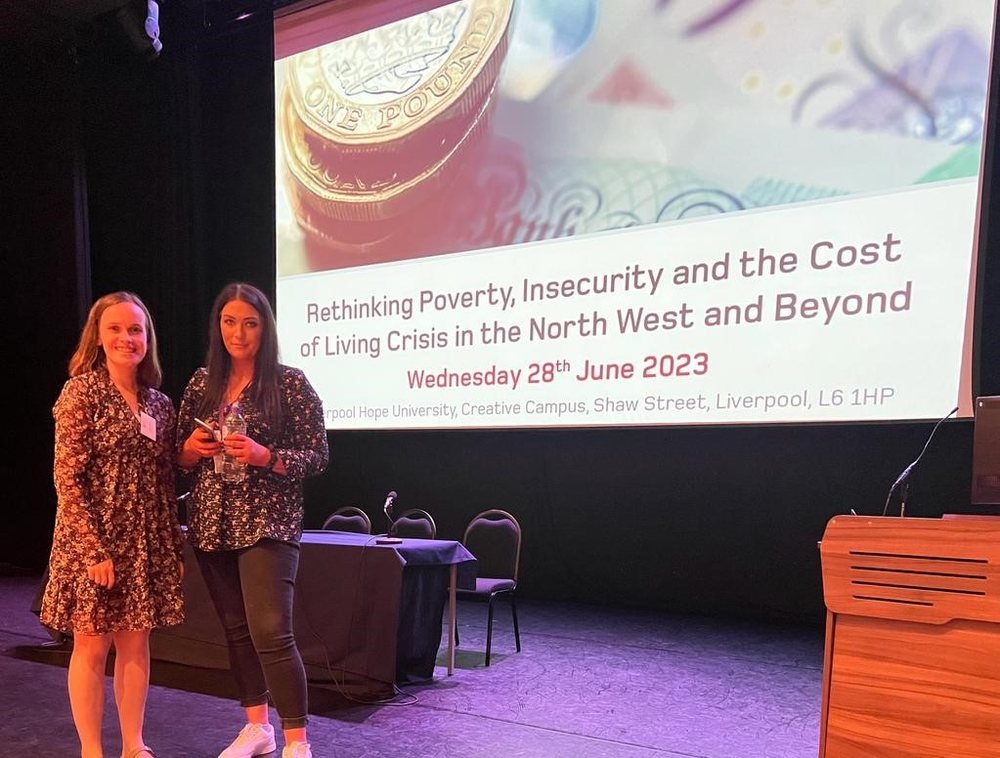

News · June 2023
Sharing learning in Liverpool: community voices on smoking in Scotland shared at a national conference on poverty, insecurity and the cost-of-living crisis

Researchers Amanda Stephen and Eilidh Cowan gave an oral presentation at the Rethinking Poverty, Insecurity and the Cost of Living Crisis in the North West and Beyond conference at Liverpool Hope University on 28th June 2023.
The presentation was entitled: Cooperative learning on non-communicable disease health inequalities in deprived communities within the cost-of-living crisis. The talk was included in a session exploring financial insecurity and growing health inequalities.
The talk shared learning on embedding community empowerment within a learning health systems process to progress cooperative learning on smoking within the cost-of-living crisis.
This research considers the social, political and commercial determinants of health inequalities as essential perspectives, and ones that inform and benefit people in communities and people working with them.
All news